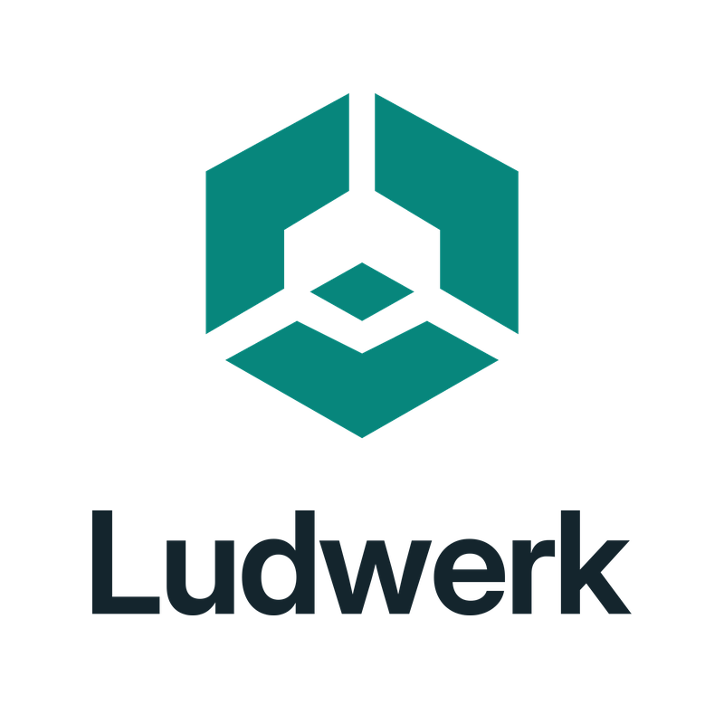
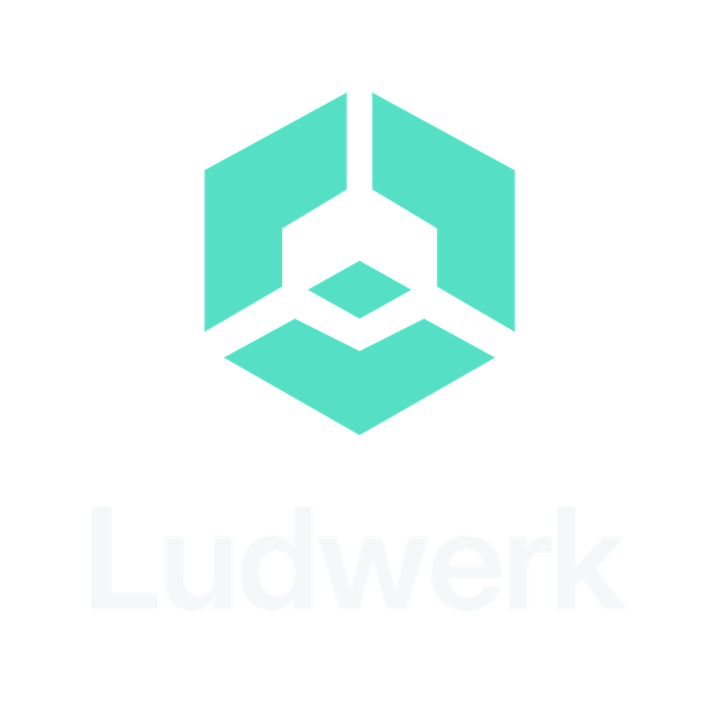

An open world built from four facets, a graphite application tile and a clear wordmark.
The refreshed Ludwerk identity, designed alongside the Orbit editor icons.
Small by design
Actual application sizes: 16, 24, 32, 48 and 64 pixels.
On dark surfaces
Mint on graphite, with transparent rounded corners.
Stacked / light

Stacked / dark
